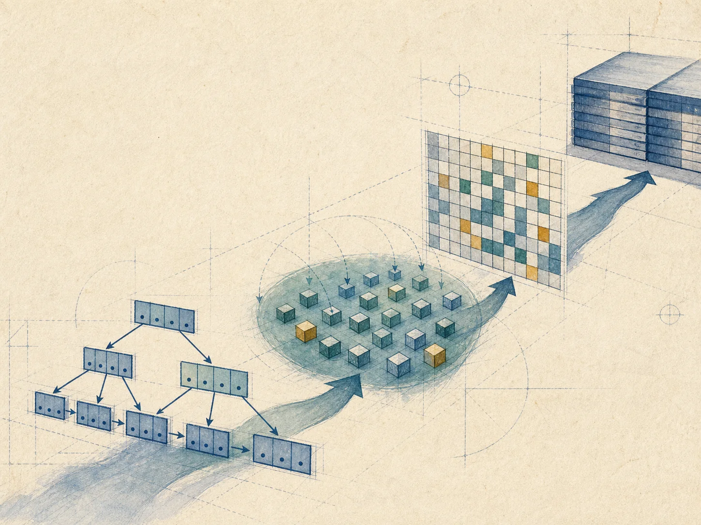
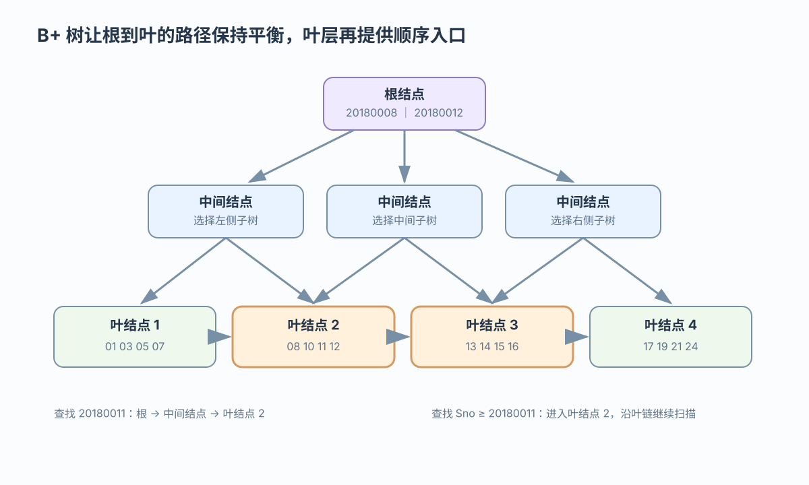
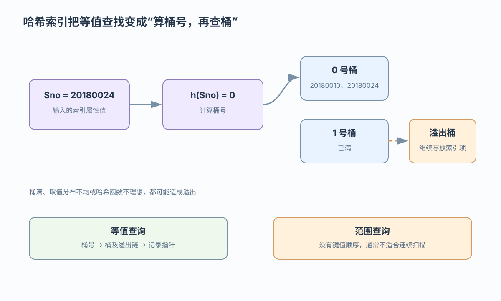
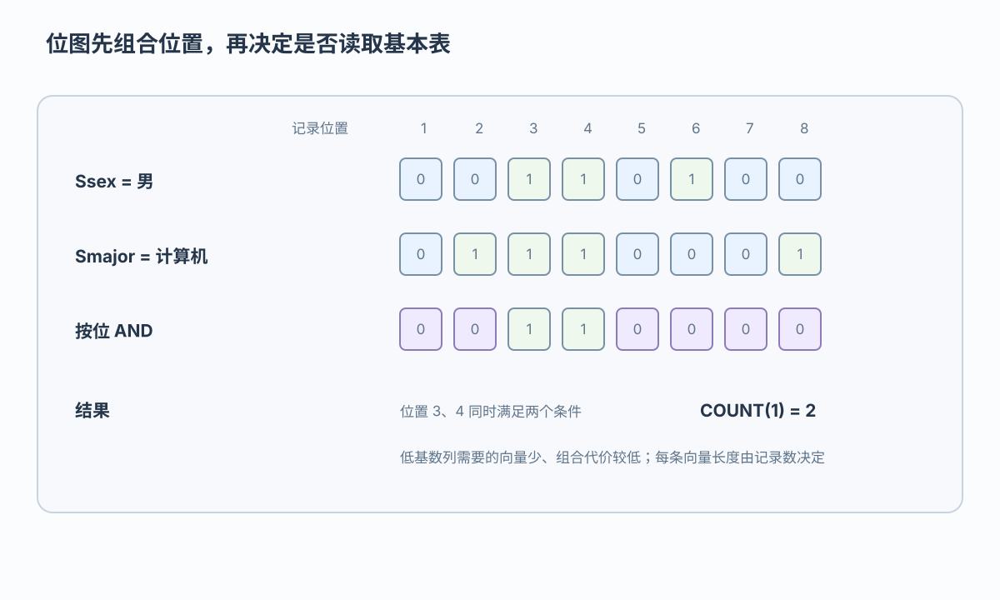

根结点
根结点根据键值范围选择子树

让查询类型决定访问结构
 VER. 2608.2
Built with impress.js
VER. 2608.2
Built with impress.js
B+ 树、哈希和位图索引的查询路径与维护代价各不相同
大规模下仍需判断定位、维护成本，以及何时扫描更便宜
| 查询类型 | 候选结构 | 还要检查的条件 |
|---|---|---|
| 随机等值 | B+ 树或哈希 | 选择性、规模、分布与溢出 |
| 范围与排序 | B+ 树 | 叶链有序，但大范围可能接近扫描 |
| 低基数筛选 | 位图 | 基数、读写比例与是否要回表 |
| 高频写入 | 少量必要索引 | 维护成本可能超过查询收益 |
候选结构不一定更快；索引扫描是否合适还取决于查询处理、优化器和顺序扫描成本
B+ 树把多级索引块组成平衡树，根到叶的路径长度相同

根结点根据键值范围选择子树
保存分隔键和子指针，按区间继续向下
保存索引项和记录指针，并连接兄弟叶
B+ 树的叶链提供有序入口；叶项指向基本表记录，不等于把完整数据记录放进索引结点
例如查找 Sno = 20180011，找到叶项后再沿记录指针读取 Student 元组
20180011 > 20180008→中间：20180010 < 20180011 < 20180012→叶命中→记录指针叶结点没有匹配项时，说明该键不存在；所有叶子同层让不同键值的路径大致平衡
先找入口，再顺序扫描后续叶结点；范围很大时可能接近顺序扫描
Sno BETWEEN 20180011 AND 20180016 的起点20180016 的键时停止开放范围只在到达文件末尾或查询边界时停止；结果覆盖大多数记录时仍要比较顺序扫描成本
维护可沿父子路径向上扩散；改索引键通常是先删旧项再插新项
| 更新情况 | 结构动作 | 可能结果 |
|---|---|---|
| 叶结点有空间 | 直接插入 | 树高不变 |
| 叶结点溢出 | 分裂并上推分隔键 | 树高可能增加 |
| 删除后仍满足下限 | 直接删除 | 树高不变 |
| 删除后低于下限 | 与兄弟合并并向上调整 | 树高可能降低 |
20180016→叶溢出并分裂→分隔键上推 删除 20180005→低于下限→与兄弟合并→父结点调整根结点是最低装载约束的例外；修改非索引属性不改变该索引键，修改索引属性则需同步维护
哈希索引的桶保存索引属性值与记录指针；哈希存储的桶直接保存数据记录

哈希索引服务于等值定位，不提供键值顺序；它与哈希存储的桶内容不同
均匀分布且溢出不严重时路径较短，但失败查找也要检查完整溢出链
尽量把索引项均匀分散到各桶
按桶号查找，命中则沿记录指针定位
桶满后沿附加桶继续搜索，查不到才判定不存在
因为失败查找仍要检查完整溢出链；范围条件不能利用哈希桶的键值顺序，插入和删除也要维护桶及记录指针
桶数量和索引空间需要随工作负载变化
| 结构或策略 | 桶／索引如何变化 | 主要问题 |
|---|---|---|
| 静态哈希索引 | 桶数预先固定 | 增长后溢出链变长 |
| 周期重组（增长策略） | 定期增加桶并重组索引 | 重组耗时且可能影响查询 |
| 动态哈希索引 | 随数据逐步扩展桶或目录 | 管理逻辑更复杂 |
周期重组是静态哈希的应对策略，不是第三种结构；动态哈希可减轻严重溢出但不保证没有溢出，可扩展哈希和线性哈希只作实现方向提示
每个可能值对应一条向量，每个位置对应一条记录

低基数属性对应的向量数量少，因此适合用位图表示；每条向量长度仍由记录数决定
位图还能直接支持低基数分组统计
| 查询 | 位操作 | 结果 |
|---|---|---|
Ssex = 男 AND Smajor = 计算机 | 位与 | 同时满足的记录位置 |
Smajor IN ('计算机','管理') | 位或 | 任一取值的记录位置 |
| 按性别统计人数 | 统计 1 的数量 | 分组计数 |
| 返回完整 Student 行 | 位图得到位置后回查基本表 | 位图不等于完整记录 |
空间代价随基数增长，频繁写入也会增加维护成本；优化器仍需结合成本选择路径
低基数属性的向量数量少，组合和统计较直接
高基数属性的向量数量多，标准位图可能膨胀
编码位图减少向量数量，但查询时可能检查全部编码向量
不一定。位图更适合读多写少；更新频繁时要评估位图维护和并发代价
不同索引结构的差异体现在定位路径和维护代价上
B+ 树支持平衡随机查找、叶链范围扫描和分裂合并维护
哈希索引支持等值定位，并需要处理溢出链和增长策略
位图索引适合低基数筛选和位与／位或组合，但要权衡读写代价
选择索引要结合查询类型、选择性、数据规模、更新频率和空间代价，并比较索引扫描与顺序扫描的成本
Sno 等值查找如何走根—中间—叶，范围查询如何沿叶链停止？20180016、删除 20180005 或修改索引键时，B+ 树怎样分裂、合并与维护？Ssex=男 AND Smajor=计算机 与 Smajor IN (...) 各使用什么位操作？何时需要回表？